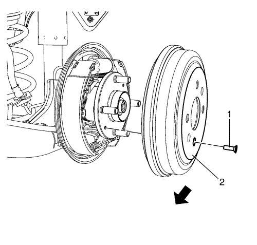

Sustitución del tambor de freno
Herramientas especiales
| • | CH-41013 Juego de repaso del rotor |
| • | CH-42450-A Juego de repaso del cubo de rueda |
Si desea informarse sobre herramientas regionales equivalentes, consultar Herramientas especiales .
Procedimiento de desmontaje
Advertencia: Consulte Advertencia relacionada con el polvo procedente de los frenos en la sección Prólogo
- Compruebe para asegurarse de que el freno de mano está totalmente soltado.
- Elevar el vehículo y soportarlo de manera segura. Consultar Elevación del vehículo con un gato .
- Desmonte la rueda del vehículo. Consultar Desmontaje y montaje de la rueda y el neumático .

- Desmonte el tornillo del tambor de freno (1).
- Desmontar el tambor de freno (2).
- Si va a volver a montar el tambor de freno, utilice el kit para el repasado del rotor, CH-41013, para limpiar la superficie de contacto del tambor de freno con la brida del cubo de rueda, y eliminar la corrosión.
Procedimiento de montaje
- Utilización del kit para el repasado del cubo de rueda, CH-42450-A, para limpiar la brida del cubo de rueda y eliminar la corrosión.
- Montar el tambor de freno (2).
- Ajuste los frenos de tambor. Consultar Ajuste de freno de tambor .
Precaución: Consulte Precaución con las fijaciones en la sección Prólogo
- Monte el tornillo del tambor de freno (1), y apriételo a 4 N·m (35 lb pulg.).
- Monte el conjunto de neumático y llanta. Consultar Desmontaje y montaje de la rueda y el neumático .
- Aplique los frenos 2 ó 3 veces para asentar y centrar las zapatas de freno en el tambor de freno.
| © Copyright Chevrolet Europe. Reservados todos los derechos |